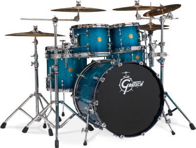

now playing DRUMS

<div>
  
</div>

<!-- <div class="drum-wrapper"> 
  <div class="drum">
     <div class="circle c1"></div>
     <div class="thick t1"></div>
     <div class="circle c2"></div>
     <div class="thick t2"></div>
     <div class="circle c3"></div>
     <div class="thick t3"></div>
     <div class="circle c4"></div>
     <div class="thick t4"></div>

     <div id="link-container">
       <div class="link"></div>
       <div class="link"></div>
       <div class="link"></div>
       <div class="link"></div>
       <div class="link"></div>
     </div>

     <div id="shadow-stick-container">
       <div class="shadow"></div>
       <div class="shadow"></div>
     </div>
  </div>

  <div id="drumstick-container">
    <div class="drumstick"></div>
    <div class="drumstick"></div>
  </div>
</div> -->